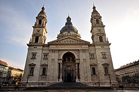

A Széchenyi lánchíd (a köznyelvben gyakran csak Lánchíd) a Buda és Pest közötti állandó összeköttetést biztosító legrégibb, legismertebb híd a Dunán, a magyar főváros egyik jelképe.
Parlament
A parlament modern államokban a törvényhozó testület. Az elnevezés a francia parler („beszélni”) szóból származik.
SZENT ISTVÁN BAZILIKA
A Szent István-bazilika (németül: St.-Stephans-Basilika, ismert még lipótvárosi plébániatemplom néven is) neoreneszánsz stílusú, basilica minor rangú templom Budapest V. kerületében.
